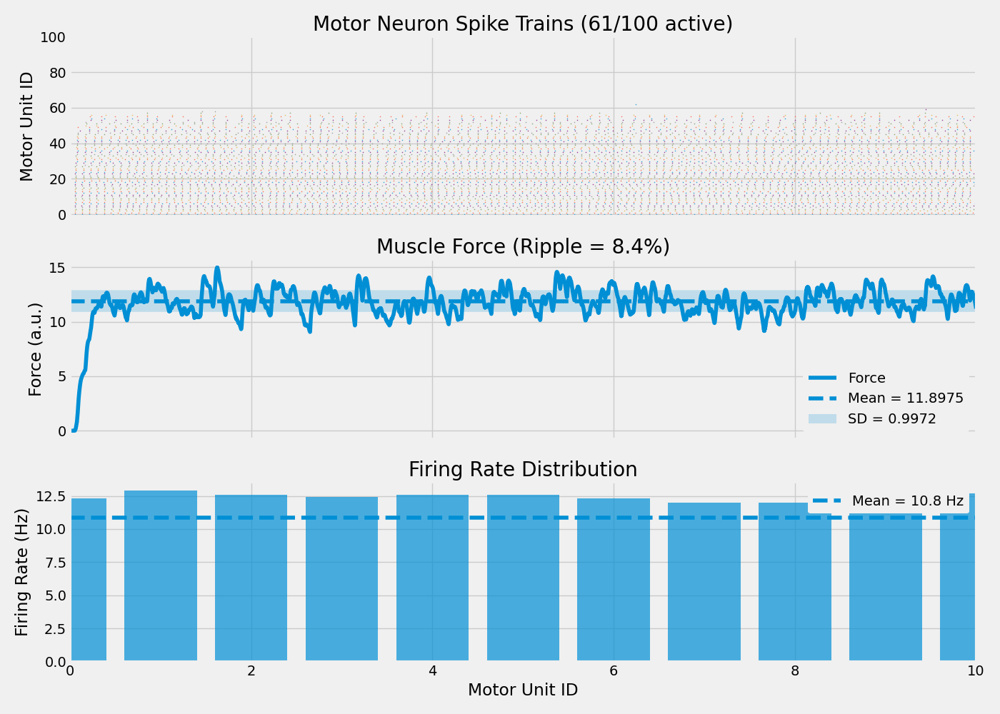

Note
Go to the end to download the full example code.
Force Generation with Optimized Descending Drive Parameters#
This example demonstrates force computation using the optimized network parameters from the previous optimization study. It shows how to load saved parameters, run a simulation with those settings, and generate realistic force output from motor neuron spike trains.
Note
Force generation workflow:
Load optimized DD parameters (neurons, connectivity, drive frequency)
Build network with optimized configuration
Simulate motor neuron spiking activity
Convert spike trains to muscle force using twitch dynamics
Validate force characteristics (mean, variability, smoothness)
Important
Prerequisites: This example requires results from the optimization study:
Run
00_optimize_dd_for_target_firing_rate.pyfirstGenerates
dd_optimized_params.jsoninresults/dd_optimization/Contains best network parameters for target firing rate
Force Model: Uses physiologically accurate motor unit twitch dynamics with:
Twitch rise times: Scaled by motor unit size (fast units: 20-40ms, slow units: 60-90ms)
Contraction-relaxation: Asymmetric temporal profile matching experimental data
Summation: Nonlinear fusion of individual twitches during repeated activation
Recruitment order: Hennemans size principle (small units first)
Import Libraries#
For force generation, we need:
ForceModel: Converts spike trains to force using twitch dynamics
Network: Neural populations and connectivity (from optimization)
Neo: Spike train data structures
import json
import os
os.environ["MPLBACKEND"] = "Agg"
if "DISPLAY" in os.environ:
del os.environ["DISPLAY"]
import warnings
from pathlib import Path
import matplotlib.pyplot as plt
import numpy as np
import quantities as pq
from neo import Block, Segment, SpikeTrain
from neuron import h
from myogen import RANDOM_GENERATOR
from myogen.simulator import RecruitmentThresholds
from myogen.simulator.core.force.force_model import ForceModel
from myogen.simulator.neuron import Network
from myogen.simulator.neuron.populations import AlphaMN__Pool, DescendingDrive__Pool
from myogen.utils.helper import calculate_firing_rate_statistics
from myogen.utils.nmodl import load_nmodl_mechanisms
warnings.filterwarnings("ignore")
plt.style.use("fivethirtyeight")
Define Simulation Parameters#
Set parameters for force validation simulation.
# Simulation settings
SIMULATION_TIME_MS = 10000.0 # 10 seconds for steady-state force
TIMESTEP_MS = 0.1 # Integration timestep (ms)
N_MOTOR_UNITS = 100 # Motor neuron pool size
# File paths - use project root to share across examples
# Handle both manual execution and Sphinx Gallery (where __file__ is not defined)
try:
_script_dir = Path(__file__).parent
except NameError:
_script_dir = Path.cwd()
RESULTS_DIR = _script_dir.parent.parent / "results" / "dd_optimization"
OUTPUT_DIR = _script_dir.parent.parent / "results" / "force_validation"
OUTPUT_DIR.mkdir(exist_ok=True, parents=True)
# Fixed parameters (matching optimization)
SYNAPTIC_WEIGHT = 0.05 # DD→MN synaptic weight (µS)
Load Optimized Parameters#
Load the best network parameters from the optimization study.
params_file = RESULTS_DIR / "dd_optimized_params.json"
if not params_file.exists():
raise FileNotFoundError(
f"Optimized parameters not found: {params_file}\n"
f"Run 00_optimize_dd_for_target_firing_rate.py first!"
)
with open(params_file, "r") as f:
results = json.load(f)
# Extract optimized parameters
dd_params = results["best_trial"]
dd_neurons = dd_params["dd_neurons"]
conn_probability = dd_params["conn_probability"]
dd_drive__Hz = dd_params["dd_drive__Hz"]
gamma_shape = dd_params["gamma_shape"]
# Load Gfluctdv settings if present
gfluctdv_enabled = results.get("input_parameters", {}).get("gfluctdv_enabled", False)
gfluctdv_noise_amplitude = dd_params.get("gfluctdv_noise_amplitude", None)
print("\nForce Validation with Optimized Parameters")
print("=" * 50)
print(f"DD neurons: {dd_neurons}")
print(f"Connection probability: {conn_probability:.3f}")
print(f"Drive frequency: {dd_drive__Hz:.1f} Hz")
print(f"Gamma shape: {gamma_shape:.2f}")
if gfluctdv_enabled:
print(f"Gfluctdv: ENABLED (amplitude={gfluctdv_noise_amplitude:.2e} S/cm²)")
else:
print("Gfluctdv: DISABLED")
print("=" * 50 + "\n")
Force Validation with Optimized Parameters
==================================================
DD neurons: 379
Connection probability: 0.841
Drive frequency: 19.4 Hz
Gamma shape: 3.00
Gfluctdv: DISABLED
==================================================
Load NEURON Mechanisms and Setup Network#
Initialize NEURON and create the network with optimized parameters.
load_nmodl_mechanisms()
h.secondorder = 2 # Crank-Nicolson integration
# Create recruitment thresholds
recruitment_thresholds, _ = RecruitmentThresholds(
N=N_MOTOR_UNITS,
recruitment_range__ratio=100,
deluca__slope=5,
konstantin__max_threshold__ratio=1.0,
mode="combined",
)
# Create motor neuron pool
motor_neuron_pool = AlphaMN__Pool(
recruitment_thresholds__array=recruitment_thresholds,
config_file="alpha_mn_default.yaml",
)
# Apply Gfluctdv if it was enabled during optimization
if gfluctdv_enabled and gfluctdv_noise_amplitude is not None:
print("Applying Gfluctdv to motor neurons (matching optimization settings)...")
for cell in motor_neuron_pool:
cell.insert_Gfluctdv()
for d in cell.dend:
d.std_e_Gfluctdv = gfluctdv_noise_amplitude
d.std_i_Gfluctdv = gfluctdv_noise_amplitude
# Create descending drive pool with optimized size
descending_drive_pool = DescendingDrive__Pool(
n=dd_neurons,
timestep__ms=TIMESTEP_MS * pq.ms,
process_type="gamma",
shape=float(gamma_shape),
)
Build Network with Optimized Connectivity#
Create synaptic connections using the optimized probability and weights.
network = Network({"DD": descending_drive_pool, "aMN": motor_neuron_pool})
# Connect with optimized probability
network.connect(
source="DD",
target="aMN",
probability=conn_probability,
weight__uS=SYNAPTIC_WEIGHT * pq.uS,
)
# External input to DD population
network.connect_from_external(source="cortical_input", target="DD", weight__uS=1.0 * pq.uS)
dd_netcons = network.get_netcons("cortical_input", "DD")
Setup Spike Recording#
Configure spike time recording for all motor neurons.
mn_spike_recorders = []
for cell in motor_neuron_pool:
spike_recorder = h.Vector()
nc = h.NetCon(cell.soma(0.5)._ref_v, None, sec=cell.soma)
nc.threshold = 50 # Spike detection threshold (mV)
nc.record(spike_recorder)
mn_spike_recorders.append(spike_recorder)
Generate Drive Signal#
Create constant drive at the optimized frequency with small noise.
time_points = int(SIMULATION_TIME_MS / TIMESTEP_MS)
drive_signal = np.ones(time_points) * dd_drive__Hz + np.clip(
RANDOM_GENERATOR.normal(0, 1.0, size=time_points), 0, None
)
Run Simulation#
Execute the NEURON simulation to generate motor neuron spike trains.
h.load_file("stdrun.hoc")
h.dt = TIMESTEP_MS
h.tstop = SIMULATION_TIME_MS
# Initialize voltages
for section, voltage in zip(*motor_neuron_pool.get_initialization_data()):
section.v = voltage
for section, voltage in zip(*descending_drive_pool.get_initialization_data()):
section.v = voltage
h.finitialize()
print("Running simulation...")
step_counter = 0
while h.t < h.tstop:
current_drive = drive_signal[min(step_counter, len(drive_signal) - 1)]
for dd_cell in descending_drive_pool:
if dd_cell.integrate(current_drive):
if h.t < h.tstop:
dd_netcons[dd_cell.pool__ID].event(h.t + 1)
h.fadvance()
step_counter += 1
print("Simulation complete!\n")
Running simulation...
Simulation complete!
Process Spike Trains#
Convert NEURON recordings to Neo SpikeTrain objects.
dt_s = h.dt / 1000.0
mn_segment = Segment(name="Motor Neurons")
mn_segment.spiketrains = [
SpikeTrain(
recorder.as_numpy() / 1000 * pq.s,
t_stop=SIMULATION_TIME_MS / 1000 * pq.s,
sampling_rate=(1 / dt_s * (pq.Hz)),
sampling_period=dt_s * pq.s,
name=f"MN_{i}",
)
for i, recorder in enumerate(mn_spike_recorders)
]
spike_train__Block = Block(name="Motor Unit Pool")
spike_train__Block.segments = [mn_segment]
Calculate Firing Rate Statistics#
Analyze spike train characteristics.
stats = calculate_firing_rate_statistics(mn_segment.spiketrains)
fr_mean = float(stats["FR_mean"])
fr_std = float(stats["FR_std"])
n_active = int(stats["n_active"])
print("Firing Rate Statistics:")
print(f" Active units: {n_active}/{N_MOTOR_UNITS}")
print(f" Mean firing rate: {fr_mean:.2f} Hz")
print(f" Std deviation: {fr_std:.2f} Hz")
print(f" Coefficient of variation: {fr_std / fr_mean:.3f}\n")
Firing Rate Statistics:
Active units: 59/100
Mean firing rate: 10.83 Hz
Std deviation: 2.36 Hz
Coefficient of variation: 0.218
Generate Force Output#
Convert spike trains to muscle force using motor unit twitch dynamics.
Note
The ForceModel implements:
Size-dependent twitch rise times (Henneman’s principle)
Nonlinear force summation during repetitive activation
Realistic contraction-relaxation dynamics
Physiologically validated parameter ranges
force_model = ForceModel(
recruitment_thresholds=recruitment_thresholds,
recording_frequency__Hz=2048 * pq.Hz, # High sampling for smooth force
longest_duration_rise_time__ms=90.0 * pq.ms, # Slow unit rise time
contraction_time_range_factor=3, # Rise:fall time ratio
)
force_output = force_model.generate_force(spike_train__Block=spike_train__Block)
force_signal = force_output.magnitude[:, 0]
force_time = force_output.times.rescale(pq.s).magnitude
Pool 1 Twitch trains (Numba): 0%| | 0/100 [00:00<?, ?MU/s]
Pool 1 Twitch trains (Numba): 1%| | 1/100 [00:00<00:27, 3.61MU/s]
Pool 1 Twitch trains (Numba): 100%|██████████| 100/100 [00:00<00:00, 346.90MU/s]
Analyze Force Characteristics#
Compute steady-state force statistics (using last 50% to avoid transients).
steady_idx = len(force_signal) // 2
force_steady = force_signal[steady_idx:]
force_mean = np.mean(force_steady)
force_std = np.std(force_steady)
force_cov = force_std / force_mean # Coefficient of variation
print("Force Statistics (steady-state):")
print(f" Mean force: {force_mean:.4f} a.u.")
print(f" Std deviation: {force_std:.4f} a.u.")
print(f" Coefficient of variation: {force_cov:.3f}")
print(f" Ripple amplitude: {(force_std / force_mean) * 100:.2f}%\n")
Force Statistics (steady-state):
Mean force: 11.8975 a.u.
Std deviation: 0.9972 a.u.
Coefficient of variation: 0.084
Ripple amplitude: 8.38%
Save Results#
Store force validation results for comparison across parameter sets.
force_results = {
"dd_parameters": dd_params,
"gfluctdv_enabled": gfluctdv_enabled,
"firing_rate": {
"mean__Hz": fr_mean,
"std__Hz": fr_std,
"n_active": n_active,
"cov": fr_std / fr_mean,
},
"force": {
"mean__au": force_mean,
"std__au": force_std,
"cov": force_cov,
"ripple_percent": (force_std / force_mean) * 100,
},
}
results_file = OUTPUT_DIR / "force_results.json"
with open(results_file, "w") as f:
json.dump(force_results, f, indent=2)
print(f"Saved results: {results_file}")
Saved results: /home/runner/work/MyoGen/MyoGen/results/force_validation/force_results.json
Visualize Results#
Create clean visualizations of spike trains and force output.
fig, axes = plt.subplots(3, 1, figsize=(14, 10), sharex=True)
# 1. Motor neuron raster plot
active_count = 0
for i, spiketrain in enumerate(mn_segment.spiketrains):
if len(spiketrain) > 0:
spike_times = spiketrain.rescale(pq.s).magnitude
axes[0].scatter(spike_times, [i] * len(spike_times), s=0.5, alpha=0.6)
active_count += 1
axes[0].set_ylabel("Motor Unit ID")
axes[0].set_title(f"Motor Neuron Spike Trains ({active_count}/{N_MOTOR_UNITS} active)")
axes[0].set_ylim(-1, N_MOTOR_UNITS)
# 2. Force trace
axes[1].plot(force_time, force_signal, label="Force")
axes[1].axhline(force_mean, linestyle="--", label=f"Mean = {force_mean:.4f}")
axes[1].fill_between(
force_time,
force_mean - force_std,
force_mean + force_std,
alpha=0.2,
label=f"SD = {force_std:.4f}",
)
axes[1].set_ylabel("Force (a.u.)")
axes[1].set_title(f"Muscle Force (Ripple = {force_cov * 100:.1f}%)")
axes[1].legend(framealpha=1.0, edgecolor="none")
# 3. Firing rate distribution
firing_rates = []
mu_ids = []
for i, st in enumerate(mn_segment.spiketrains):
if len(st) > 2:
rate = len(st) / (SIMULATION_TIME_MS / 1000.0)
firing_rates.append(rate)
mu_ids.append(i)
if firing_rates:
axes[2].bar(mu_ids, firing_rates, alpha=0.7)
axes[2].axhline(fr_mean, linestyle="--", label=f"Mean = {fr_mean:.1f} Hz")
axes[2].set_xlabel("Motor Unit ID")
axes[2].set_ylabel("Firing Rate (Hz)")
axes[2].set_title("Firing Rate Distribution")
axes[2].legend(framealpha=1.0, edgecolor="none")
# Format all axes
for ax in axes:
ax.set_xlim(0, SIMULATION_TIME_MS / 1000)
plt.tight_layout()
plt.savefig(OUTPUT_DIR / "force_validation.png", dpi=150, bbox_inches="tight")
plt.show()

Total running time of the script: (0 minutes 17.039 seconds)